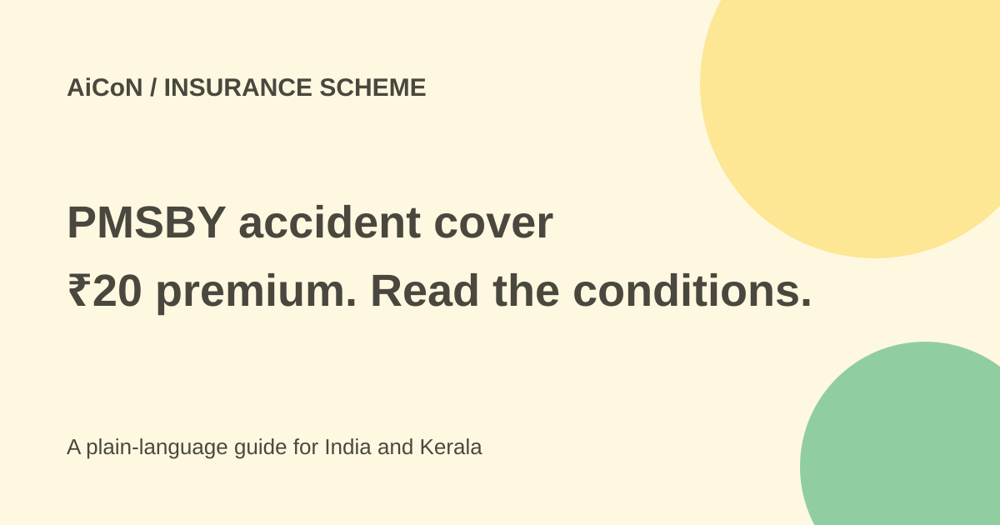

PMSBY: ₹20 accident cover, disability rules and enrolment checks
PMSBY is one-year bank-linked accident insurance with a ₹20 annual premium under current rules. It pays defined benefits for accidental death or specified permanent disability. It is not general health insurance.

Who can join?
Pradhan Mantri Suraksha Bima Yojana covers eligible individual account holders aged 18 to 70 through participating banks and post offices. A person with several accounts can join through only one. Read how the age is measured and how cover ends in the scheme rules.
The cover period runs from June 1 to May 31 and is renewable. The premium is auto-debited from the chosen account after consent. Late joining is possible on payment of the full annual premium, with cover starting from the debit date under the rules.
What does it pay?
The official benefit table lists ₹2 lakh for accidental death. It lists ₹2 lakh for total and irrecoverable loss of both eyes, both hands or feet, or sight of one eye together with loss of one hand or foot. Total and irrecoverable loss of sight of one eye or loss of use of one hand or foot has a ₹1 lakh benefit.
These are defined categories, not a payment for every injury or temporary disability. The actual claim depends on the covered accident, documents and insurer's assessment under the policy.
What it does not cover
The FAQ says there is no provision for reimbursement of hospitalisation expenses. A fall that causes a hospital bill but no qualifying covered death or permanent disability does not make this a medical-expense policy.
Do not confuse PMSBY with PMJJBY life insurance or a health-insurance scheme. They have different covered events and conditions. Having this low-cost cover is not a substitute for evaluating your family's other needs.
How to join through your bank
- Contact your participating bank or post office through an official route.
- Check age, account and existing-enrolment details. Use only one account for the scheme.
- Read the current ₹20 premium, cover period and auto-debit consent before signing.
- Enter nominee details carefully and keep the acknowledgement.
- Maintain enough balance for the debit. Check your statement and confirm that cover is active.
- Keep scheme and insurer details where you and your family can find them.
- After a covered accident, contact the enrolling institution promptly for the claim form and required evidence.
Renewal and claim limits
Cover can end at the scheme's age limit, when the account closes or when insufficient balance prevents the required premium payment. Duplicate enrolments do not create double benefits; the rules restrict cover to one account and duplicate premiums can be forfeited.
For death, the nominee, appointee or legal heir follows the claim process. Disability benefit goes to the insured person's bank account under the FAQ. Ask the enrolling bank about deadlines and documents rather than assuming a generic claim window.
Never pay an unknown person who says a WhatsApp message proves insurance cover. Keep your OTP, PIN and account password private. In Kerala, the same national scheme rules apply through participating institutions; a local poster cannot override them.
What changed since the original post?
The ₹20 annual premium and entry-age range remain supported. This article adds the defined disability categories, no hospital-bill reimbursement and active-debit/renewal limits. No insurance was purchased and no claim was submitted.
Frequently asked questions
Is the scheme free?
No. Its current annual premium is ₹20.
Will it pay every accident hospital bill?
No. It pays the defined scheme benefits, not hospital-expense reimbursement.
Can I enrol twice?
No. Use only one account per person.
Sources: Official PMSBY FAQ · Official PMSBY rules. Checked 7 October 2026.